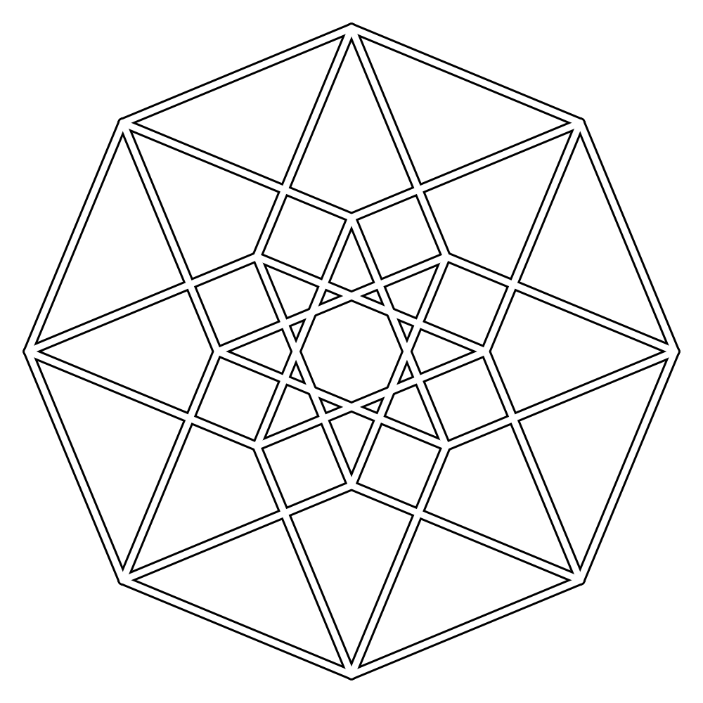
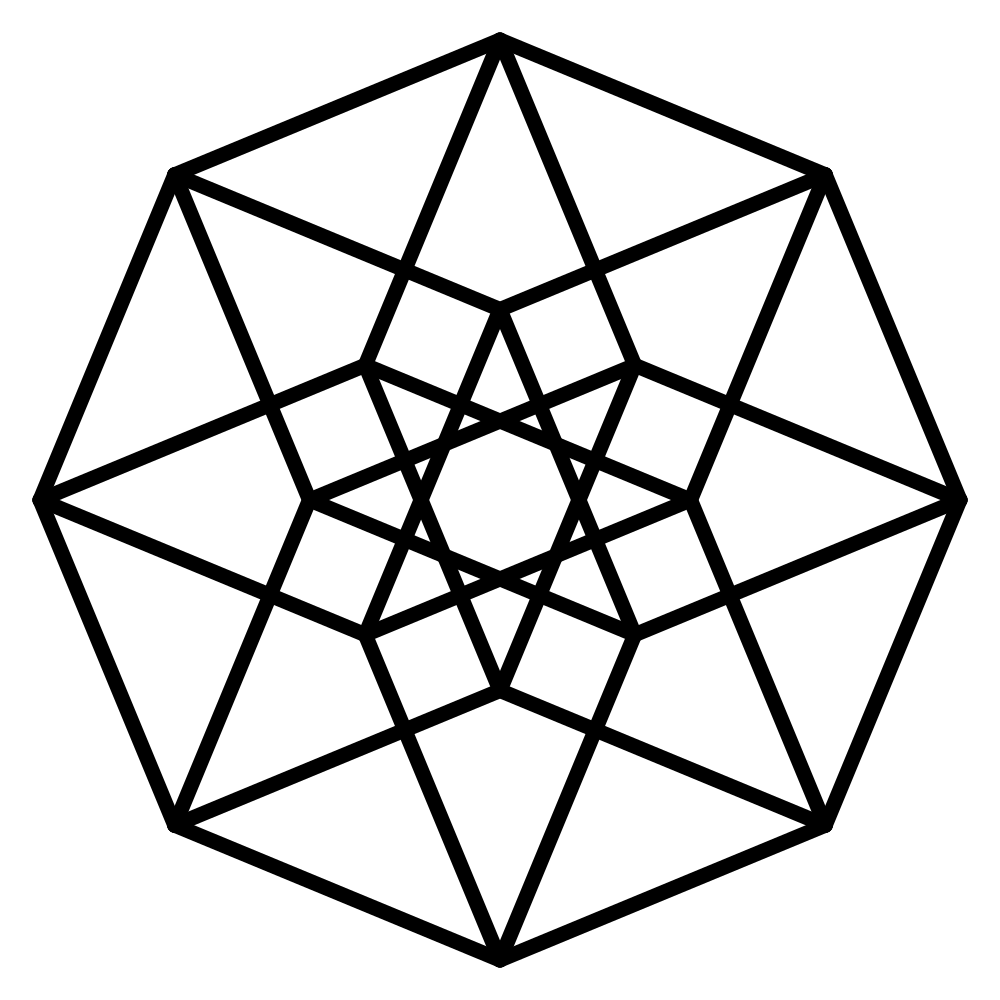

Brand — three candidates, rendered
The mark is settled: a theorem, pure black and white. What is open is the language around it. Three candidates below, each with its wordmark, lockups, palette (contrast measured, not estimated), type, and a sample research paragraph. Pick by looking. Full argument in wargame/brand-language.md.
Laws inherited from the generator, not proposed: the mark stays B/W · hue is a coordinate on the w axis (cold = far, gold = near) · every angle is a multiple of 22.5° · two stroke weights at 5:3 · round caps.
 ANANDALABS
ANANDALABS ANANDALABS
ANANDALABSThe logo is a theorem
The mark was never drawn. It is the Petrie projection of a tesseract: sixteen vertices at (±1, ±1, ±1, ±1), thirty-two edges between points that differ in one coordinate, flattened through four basis angles of π/8 + i·π/4. Change one number and every variant regenerates. Read the derivation ↗
verts=16 edges=32 basis=22.5°,67.5°,112.5°,157.5°
TesseractLogo
The mark rebuilt from pure 4D math. 50-line stdlib generator, 8 SVG masters, a zero-dep 4D motion lab.
Honest risk: grotesk-on-near-black is the most common AI-lab look of 2024–2026. Safe, credible, anonymous. Lowest cost: v0 already is this.

ANANDALABS
ANANDALABSThe logo is a theorem
The mark was never drawn. It is the Petrie projection of a tesseract: sixteen vertices at (±1, ±1, ±1, ±1), thirty-two edges between points that differ in one coordinate, flattened through four basis angles of π/8 + i·π/4. Change one number and every variant regenerates. Read the derivation ↗
verts=16 edges=32 basis=22.5°,67.5°,112.5°,157.5°
TesseractLogo
The mark rebuilt from pure 4D math. 50-line stdlib generator, 8 SVG masters, a zero-dep 4D motion lab.
Register: Distill / Ink & Switch / a mathematics monograph. Reads as a place that publishes results before you read a word. Raw gold is unreadable on paper: text uses gold-ink, figures use gold. Wargame's pick for research pages.
ånändâLABSAnandaLABSThe logo is a theorem
The mark was never drawn. It is the Petrie projection of a tesseract: sixteen vertices at (±1, ±1, ±1, ±1), thirty-two edges between points that differ in one coordinate, flattened through four basis angles of π/8 + i·π/4. Change one number and every variant regenerates. Read the derivation ↗
verts=16 edges=32 basis=22.5°,67.5°,112.5°,157.5°
TesseractLogo
The mark rebuilt from pure 4D math. 50-line stdlib generator, 8 SVG masters, a zero-dep 4D motion lab.
The only candidate that uses the name's own texture; far pole moves blue → violet, which no surveyed lab uses as primary. Risk: reads spiritual-wellness if done badly. Most memorable if done well. Never on a benchmark page.
V1 — the Registry Tesseract (live, from index.json)
Four binary axes of the registry make exactly a hypercube. Every creation sits on one of the 16 vertices; a state change is one edge. Disc area = count. Hue = how far toward "public + shipped" (w). Hover a vertex.